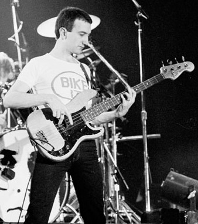

John Deacon
John Deacon, nacido el 19 de agosto de 1951 en Leicester, Inglaterra, fue el bajista de Queen y un miembro clave en el desarrollo del sonido de la banda. Conocido por su perfil bajo y personalidad reservada, Deacon aportó su destreza como bajista y también como compositor, creando algunos de los mayores éxitos de Queen, como "Another One Bites the Dust," "You're My Best Friend," y "I Want to Break Free." Su talento para crear líneas de bajo pegajosas y complejas dio a Queen una sólida base rítmica y contribuyó al éxito comercial de la banda. Tras la muerte de Freddie Mercury en 1991, Deacon se retiró gradualmente de la música, haciendo sus últimas apariciones públicas con Queen en los años 90. Desde entonces, ha llevado una vida privada y alejada de los escenarios, manteniendo un legado como uno de los bajistas más respetados en la historia del rock.